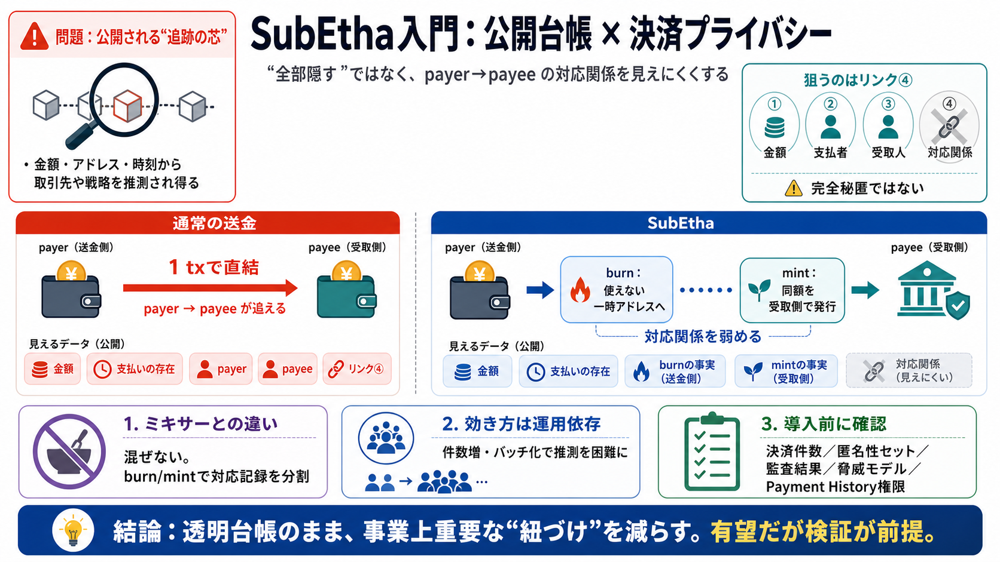

zERC20 : Cross-Chain Private ERC-20 Based on ZK Proof-of-Burn - ERCs - Fellowship of Ethereum Magicians
# Related Works Tornado cash EIP-7503: zk-Wormholes EIP-1724: zkERC20 erc721-extension-for-zk-snarks(stealth addr…

# Related Works Tornado cash EIP-7503: zk-Wormholes EIP-1724: zkERC20 erc721-extension-for-zk-snarks(stealth addr…
Tornado Cash is a non-custodial Ethereum and ERC20 privacy solution based on zkSNARKs. It improves transaction privacy b…
Tornado Cash (Tornado) is a virtual currency mixer that operates on the Ethereum blockchain and indiscriminately facilit…
This move to sanction Tornado Cash represents the first instance in which the US government has applied economic sanctio…
1. Ethereum.org 2. / 3. ALL APPS 4. / 5. Tornado Cash Image 1: Tornado Cash Privacy # Tornado Cash Image 2…